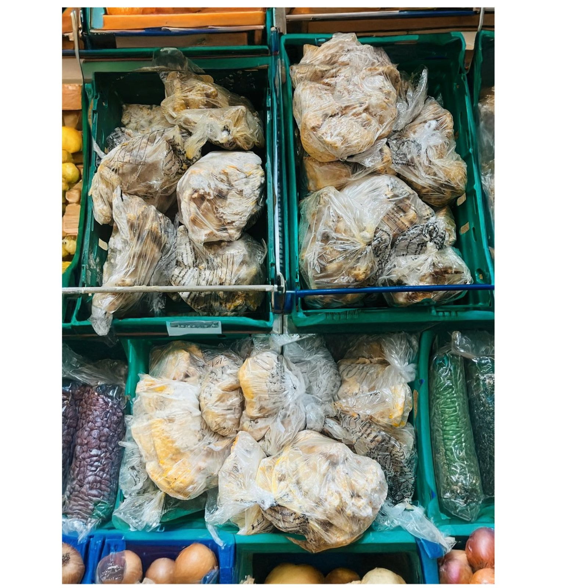

100% Free · Community Support
Joybringers Foodbank — Making a Difference Together
We rescue surplus food and get it to individuals and families who need it most — completely free, no referral required. We proudly serve communities across Newcastle, Gateshead, North Tyneside, Sunderland, Durham, Northumberland and the wider North East.
Join Our Foodbank Group How It WorksWhat We Do
Rescuing Good Food, Supporting Local Families
Every week our volunteers collect surplus food from retail and food partners — including ASDA, Tesco, KFC and Nando's — that would otherwise go to waste. We sort, check, and pass it on to individuals and families across our community, completely free of charge.
Alongside food collections, we offer practical family support — helping connect people with the wider services they need, with dignity and without judgement.

Where We Work
Serving the North East
We're not limited to one borough — our foodbank and family support reaches communities right across the region.
How It Works
Simple, Fast, No Referral Needed
Right now our foodbank runs through our WhatsApp community group — here's how it works.
We Collect
Our volunteers collect surplus food from retail and food partners across the region.
We Post What's Available
We share what food is available in our WhatsApp group as soon as it comes in.
You Let Us Know
Reply in the group to let us know you'd like some — first come, first served.
You Collect — Free
Pick up your food from our collection point. 100% free, every time.
Join Our Foodbank Community
Whether you'd like to receive support, volunteer your time, or help us collect and distribute food — there's a place for you in our WhatsApp community.
Join the Group Volunteer With Us